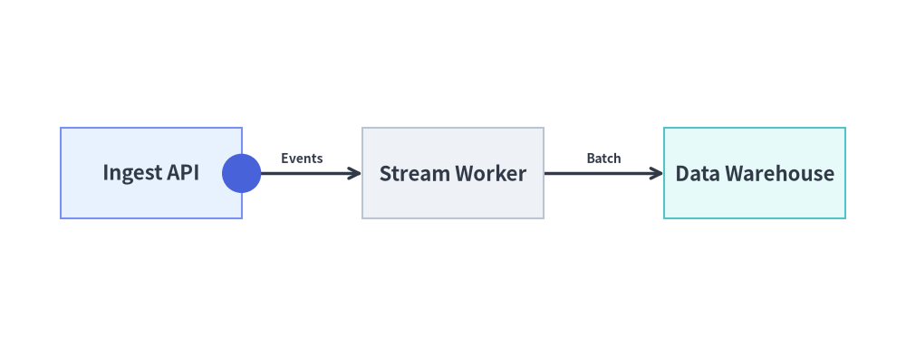

Animating Auto-Layout Graphs
All 5 declarative auto-layout graph solvers in drawlib.graph (ArchitectureGraph, LayerGraph, TreeGraph, RadialGraph, and GridGraph) follow Pattern B (Pre-Build & Mutate):
Source Code
from drawlib.anim import Animation
from drawlib.canvas import save, setup
from drawlib.graph import TreeGraph
from drawlib.icons import phosphor
from drawlib.styles import Styles
setup(width=124, height=52)
anim = Animation(fps=2.0)
g = TreeGraph(
root="gw",
direction="LR",
default_node_width=26.0,
default_node_height=12.5,
default_node_style=Styles.Neutral,
default_node_text_style=Styles.DarkBold.patch(text_size=10.5),
default_edge_style=Styles.DarkBold,
)
n_gw = g.node("gw", "\nAPI Gateway", style=Styles.PrimaryFlat, text_style=Styles.WhiteBold.patch(text_size=10.5))
n_auth = g.child("gw", "auth", "\nAuth Service", style=Styles.PrimaryNeutral, text_style=Styles.DarkBold.patch(text_size=10.5), show=False)
n_bill = g.child("gw", "bill", "\nBilling API", style=Styles.SecondaryNeutral, text_style=Styles.DarkBold.patch(text_size=10.5), show=False)
n_cache = g.child("auth", "cache", "\nToken Cache", style=Styles.Neutral, text_style=Styles.DarkBold.patch(text_size=10.5), show=False)
n_ledger = g.child("bill", "ledger", "\nLedger DB", style=Styles.Neutral, text_style=Styles.DarkBold.patch(text_size=10.5), show=False)
icons = {
"gw": phosphor.shield_check,
"auth": phosphor.lock_key,
"bill": phosphor.credit_card,
"cache": phosphor.lightning,
"ledger": phosphor.database,
}
def draw_with_icons() -> None:
layout = g.draw(margin=5.0)
for nid, icon_fn in icons.items():
n = layout.nodes[nid]
if n.show:
ic_style = Styles.White if n.style == Styles.PrimaryFlat else Styles.PrimaryFlat
icon_fn((n.x, n.y + 2.4), width=4.2, style=ic_style)
# Frame 1: Root node at its final auto-solved position
with anim.frame(duration=0.7):
draw_with_icons()
# Frame 2: Reveal Tier 1 services (Auth Service highlighted)
n_gw.style = Styles.PrimaryNeutral
n_gw.text_style = Styles.DarkBold.patch(text_size=10.5)
n_auth.show = True
n_auth.style = Styles.PrimaryFlat
n_auth.text_style = Styles.WhiteBold.patch(text_size=10.5)
n_bill.show = True
with anim.frame(duration=0.7):
draw_with_icons()
# Frame 3: Reveal Leaf data stores (Ledger DB highlighted)
n_auth.style = Styles.PrimaryNeutral
n_auth.text_style = Styles.DarkBold.patch(text_size=10.5)
n_cache.show = True
n_ledger.show = True
n_ledger.style = Styles.PrimaryFlat
n_ledger.text_style = Styles.WhiteBold.patch(text_size=10.5)
with anim.frame(duration=0.7):
draw_with_icons()
# Frame 4: Settled full hierarchy with Root Gateway as focal node
n_ledger.style = Styles.Neutral
n_ledger.text_style = Styles.DarkBold.patch(text_size=10.5)
n_gw.style = Styles.PrimaryFlat
n_gw.text_style = Styles.WhiteBold.patch(text_size=10.5)
with anim.frame(duration=2.5):
draw_with_icons()
save()
- Declare Full Topology Once: Register all nodes (
g.node()), clusters (g.cluster()/g.group()), and edges (g.edge()) once outside the animation loop. - Mutate & Redraw Per Frame: Inside
with anim.frame():, mutatenode.show,node.style,cluster.show,edge.show, oredge.style, and callg.draw(margin=..., scale=...)(or pre-computelayout = g.calc()and calllayout.draw()).
(For coordinate-controlled diagrams in drawlib.diagrams, see Animating Technical Diagrams.)
1. Deterministic Layout Locking (g.calc() & .show = False)
A core challenge when animating auto-layout graphs in traditional tools is layout jumping: adding a node on Frame 2 causes the layout engine to recompute all positions and shift Frame 1's nodes unpredictably.
Drawlib eliminates layout jumping by separating layout solving (g.calc()) from visibility filtering (show=False):
g.calc()always solves node coordinates, cluster bounding boxes, and orthogonal edge ports across the entire declared topology, regardless of whethernode.show,cluster.show, oredge.showisFalse.- During rendering (
g.draw()orlayout.draw()), hidden elements (show=False) are skipped while visible elements render at their locked final coordinates. - Setting
node.show = Falsealso automatically hides any edges connected to that node, so edges appear cleanly as soon as both endpoint nodes become visible.
| Declaration / Layout Property | Description |
|---|---|
node.show / cluster.show / edge.show |
Toggle visibility per frame while keeping all computed coordinates and container bounding boxes 100% stationary. |
node.style / node.text_style |
Highlight the newly revealed or active node with Styles.PrimaryFlat (Styles.WhiteBold text) and settle previous steps into Styles.PrimaryNeutral or Styles.Neutral. |
edge.style / edge.text_style |
Mutate edge.style = Styles.PrimaryBold to highlight active data paths, or pass edge_layout.points (list[tuple[float, float]]) from layout = g.calc() to get_intermediate_path_points() to animate packets along auto-routed edges. |
g.draw(*, xy=(0, 0), width=None, height=None, margin=10.0, scale=1.0) |
Solves and renders the layout with configurable origin translation xy, target width/height, outer margin, and uniform proportional scale. |
2. Step-by-Step Pipeline Reveal (LayerGraph)
In LayerGraph, g.node(id, label, ...) returns a mutable Node declaration. Toggling node.show = (i <= step) and updating node.style inside the frame loop reveals each pipeline rank sequentially while keeping the horizontal layout locked:
from drawlib.anim import Animation
from drawlib.canvas import save, setup
from drawlib.graph import LayerGraph
from drawlib.styles import Styles
setup(width=124, height=34)
anim = Animation(fps=1.5)
g = LayerGraph(
direction="LR",
rank_sep=8.0,
default_node_width=23.0,
default_node_height=11.5,
default_node_text_style=Styles.DarkBold.patch(text_size=10.5),
)
nodes = [
g.node("edge", "Edge Router", layer=0),
g.node("auth", "Auth Guard", layer=1),
g.node("core", "Core API", layer=2),
g.node("db", "Primary DB", layer=3),
]
g.edge("edge", "auth")
g.edge("auth", "core")
g.edge("core", "db")
for step in range(len(nodes)):
for i, node in enumerate(nodes):
node.show = (i <= step)
node.style = Styles.PrimaryFlat if i == step else Styles.PrimaryNeutral
node.text_style = Styles.WhiteBold.patch(text_size=10.5) if i == step else Styles.DarkBold.patch(text_size=10.5)
is_last = (step == len(nodes) - 1)
with anim.frame(duration=2.5 if is_last else 0.8):
g.draw(margin=5.0)
save()
3. Progressive Cluster & Edge Reveal (ArchitectureGraph)
In ArchitectureGraph, you can combine cluster.show, node.show, node.style, and edge.style to reveal cloud zones and highlight active request routing step by step across nested VPC tiers:
from drawlib.anim import Animation
from drawlib.canvas import save, setup
from drawlib.graph import ArchitectureGraph
from drawlib.styles import Styles
setup(width=126, height=52)
anim = Animation(fps=1.5)
g = ArchitectureGraph(
direction="LR",
container_sep=6.5,
default_node_width=20.0,
default_node_height=10.5,
default_node_text_style=Styles.DarkBold.patch(text_size=10.5),
default_edge_text_style=Styles.Dark.patch(text_size=10.0),
)
# 1. Declare clusters and nodes across 3 zones
c_ext = g.cluster("ext", ["client"], label="External", pos="left", padding=4.0)
n_client = g.node("client", "Client App", style=Styles.Neutral, text_style=Styles.DarkBold.patch(text_size=10.5))
c_app = g.cluster("app", ["gw", "worker"], label="Compute VPC", pos="center", padding=4.5, show=False)
n_gw = g.node("gw", "API Gateway", style=Styles.PrimaryFlat, text_style=Styles.WhiteBold.patch(text_size=10.5), show=False)
n_worker = g.node("worker", "Task Worker", style=Styles.PrimaryNeutral, text_style=Styles.DarkBold.patch(text_size=10.5), show=False)
c_data = g.cluster("data", ["db"], label="Data Tier", pos="right", padding=4.0, show=False)
n_db = g.node("db", "Primary DB", style=Styles.SecondaryNeutral, text_style=Styles.DarkBold.patch(text_size=10.5), show=False)
e1 = g.edge("client", "gw", "HTTPS")
e2 = g.edge("gw", "worker", "Dispatch")
e3 = g.edge("worker", "db", "Write")
# Frame 1: External Client entry point
with anim.frame(duration=0.8):
g.draw(xy=(-6.0, -5.0), width=138, height=62)
# Frame 2: Reveal Compute VPC & API Gateway with active incoming edge
c_app.show = True
n_gw.show = True
e1.style = Styles.PrimaryBold
with anim.frame(duration=0.8):
g.draw(xy=(-6.0, -5.0), width=138, height=62)
# Frame 3: Reveal Task Worker inside Compute VPC
e1.style = Styles.DarkBold
n_gw.style = Styles.PrimaryNeutral
n_gw.text_style = Styles.DarkBold.patch(text_size=10.5)
n_worker.show = True
n_worker.style = Styles.PrimaryFlat
n_worker.text_style = Styles.WhiteBold.patch(text_size=10.5)
e2.style = Styles.PrimaryBold
with anim.frame(duration=0.8):
g.draw(xy=(-6.0, -5.0), width=138, height=62)
# Frame 4: Reveal Data Tier and complete architecture (hold final frame)
e2.style = Styles.DarkBold
n_worker.style = Styles.PrimaryNeutral
n_worker.text_style = Styles.DarkBold.patch(text_size=10.5)
c_data.show = True
n_db.show = True
n_gw.style = Styles.PrimaryFlat
n_gw.text_style = Styles.WhiteBold.patch(text_size=10.5)
e3.style = Styles.PrimaryBold
with anim.frame(duration=2.5):
g.draw(xy=(-6.0, -5.0), width=138, height=62)
save()
4. Animating Packets Along Auto-Routed Edges (g.calc() & edge_layout.points)
Calling layout = g.calc(width=None, height=None, margin=10.0) once before the animation loop computes the exact GraphLayout without drawing anything:
- Every
EdgeLayoutinlayout.edgesexposesedge_layout.points: list[tuple[float, float]]([src_port, *waypoints, dst_port]), representing the complete auto-routed polyline trajectory. - Pass
edge_layout.pointstoget_intermediate_path_points(edge_layout.points, num=..., include_ends=True)(orget_intermediate_paths()) to animate a data packet (circle) traveling smoothly along an auto-routed graph edge while callinglayout.draw(*, xy=(0, 0), scale=1.0)on each frame:
from drawlib.anim import Animation
from drawlib.canvas import save, setup
from drawlib.graph import LayerGraph
from drawlib.math import get_intermediate_path_points
from drawlib.shapes import circle
from drawlib.styles import Styles
setup(width=118, height=38)
anim = Animation(fps=10.0)
g = LayerGraph(
direction="LR",
default_node_width=24.0,
default_node_height=12.0,
default_node_text_style=Styles.DarkBold.patch(text_size=10.5),
default_edge_text_style=Styles.Dark.patch(text_size=10.0),
)
g.node("ingest", "Ingest API", layer=0, style=Styles.PrimaryNeutral, text_style=Styles.DarkBold.patch(text_size=10.5))
g.node("worker", "Stream Worker", layer=1, style=Styles.Neutral, text_style=Styles.DarkBold.patch(text_size=10.5))
g.node("store", "Data Warehouse", layer=2, style=Styles.SecondaryNeutral, text_style=Styles.DarkBold.patch(text_size=10.5))
g.edge("ingest", "worker", "Events")
g.edge("worker", "store", "Batch")
# 1. Solve layout once to inspect auto-routed edge polylines
layout = g.calc(margin=5.0)
pts_e0 = get_intermediate_path_points(layout.edges[0].points, num=3, include_ends=True)
pts_e1 = get_intermediate_path_points(layout.edges[1].points, num=3, include_ends=True)
# 2. Hop 1: Packet travels along layout.edges[0].points
for pkt_xy in pts_e0:
with anim.frame(duration=0.12):
layout.draw()
circle(pkt_xy, radius=2.6, style=Styles.PrimaryFlat)
# 3. Hop 2: Highlight worker and move packet along layout.edges[1].points
layout.nodes["worker"].style = Styles.PrimaryFlat
layout.nodes["worker"].text_style = Styles.WhiteBold.patch(text_size=10.5)
for i, pkt_xy in enumerate(pts_e1):
is_last = (i == len(pts_e1) - 1)
if is_last:
layout.nodes["worker"].style = Styles.PrimaryNeutral
layout.nodes["worker"].text_style = Styles.DarkBold.patch(text_size=10.5)
layout.nodes["store"].style = Styles.PrimaryFlat
layout.nodes["store"].text_style = Styles.WhiteBold.patch(text_size=10.5)
with anim.frame(duration=2.2 if is_last else 0.12):
layout.draw()
if not is_last:
circle(pkt_xy, radius=2.6, style=Styles.PrimaryFlat)
save()
